-
e-m1x
진정한 전문가의 요구를 완벽하게 충족시키는 E-M1X는 모든 사진 작가가 기대하는 절대적인 자신감을 제공합니다.혁신적인 기술과 기능의 고급 시스템은 게임의 수준을 한단계 높여줍니다.
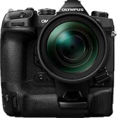 -
e-m1 mark iii
모든 조건에서 최고의 이미지 품질과 결합 된 휴대가 편한 디자인으로 E-M1 Mark III는 놀라운 결과를 얻을 수있는 최고의 도구입니다. 무게를 잃지 않고전문 사진을 자연과 풍경에서 야간 촬영, 비디오까지 새로운 차원으로 끌어 올릴 수 있습니다.
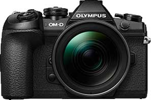 -
E-M5 Mark iii
도시의 정글, 높은 곳이나 거리, 넓은 일광 또는 밤의 풍경,비가 오는 조건 등 E-M5 Mark III는 모든 촬영 상황에서 모든 것을 처리 할 수 있습니다. 작고 가벼운 크기로 부피가 큰 장비에서 벗어날 수 있습니다.

-
E-M10 Mark iii
E-M10 Mark III의 시대를 초월한 디자인을 경험해보십시오.현대적이지만 고전적인 모양과 느낌으로 완벽한취급을 제공하는 눈길을 끄는 도구입니다.
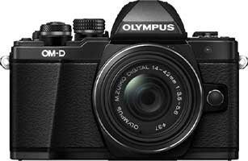
-
pen-f
시대를 초월한 디자인. 특별한 질감의 바디.OLYMPUS PEN-F를 처음 만지는 순간부터 이 카메라는영원히 함께 할 특별한 느낌을줍니다. 평생 영감을주는 OLYMPUS 디자인의 순수한 표현.
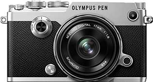 -
e-pl10
PEN E-PL10은 순수한 미학, 시대를 초월한 디자인 및 고성능 기술을 결합하여 사진을 한 단계 더 발전시킵니다. 컴팩트 한 디자인과 사용 편의성은 디자인이나 품질에타협하지 않으려는 경우 필수적인 동반자, 영감을주는 뮤즈 및 세련된“It Piece”입니다.
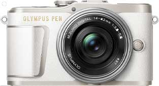 -
e-pl9
번거 로움없이 찍을 수있는 더 좋은 사진 OLYMPUS PEN E-PL9로 사진을 새로운 차원으로 끌어 올리고 스마트 폰과 완벽하게 연결되는 내장 WiFi를 통해 좋아하는 사진을 쉽게 공유하십시오.
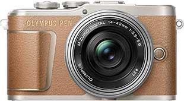 -
e-pl8
현대적인 디자인은 고전적인 곡선 및 가죽 톤 표면과 쉬운 기능성을 대비하는 고품질 금속으로 E-PL8을 빛나게합니다. 바디 컬러와 일치하는 패션 액세서리 컬렉션의 스트랩으로 이 전문 카메라를 좋아하는 액세서리로 만들 수 있습니다.
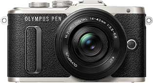
-
M.Zuiko Digital ED 45mm F1.2 PRO
매우 넓은 조리개 덕분에 창의적 관점을 실현하기 위한 이상적인 도구가 있습니다. 이 렌즈의 전체 디자인은 전문가 수준의 사용에 있어 최고의 유용성을 제공합니다.
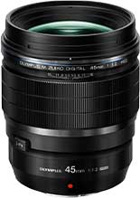 -
M.ZUIKO DIGITAL ED 12mm F2
이 렌즈는 넓은 초점 거리 덕분에 삼각대를 사용할 수 없는 곳에서도 완벽한 사진이 가능합니다. 또한 F2의 조리개가 넓어 어두운 곳에서도 플래시 없이 순간을 포착 할 수 있습니다.
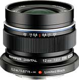 -
MMF‑3
방진 및 방적 기능을 갖춘 MMF-3은 모든 날씨 조건에 적합한 E‑M5 및 pro 또는 Top pro Four Thirds 렌즈에적합합니다. Mirco Four Thirds 본체와 함께 모든 범위의 Four Thirds 렌즈를 사용할 수 있으며 무게가 42g 인 어댑터에서만 사용할 수 있습니다.
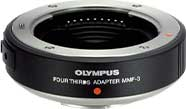 -
M.ZUIKO DIGITAL 1.4X TELECONVERTER MC‑14
MC‑14는 렌즈의 초점 거리를 1.4 배 연장하고 사진 옵션을 최대화하여 15mm의 얇은 패키지로 더 많은 망원 줌을 제공합니다.
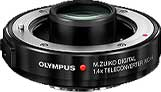